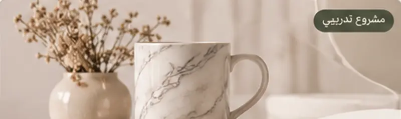
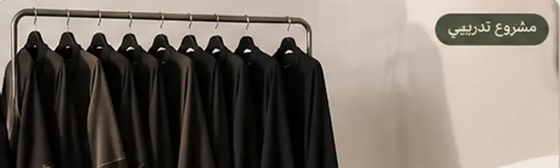
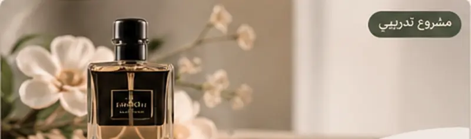
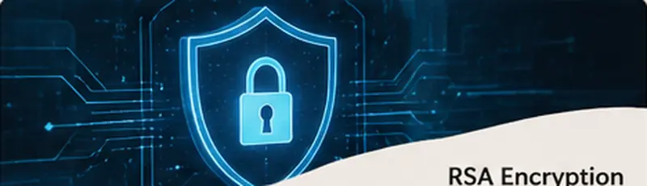
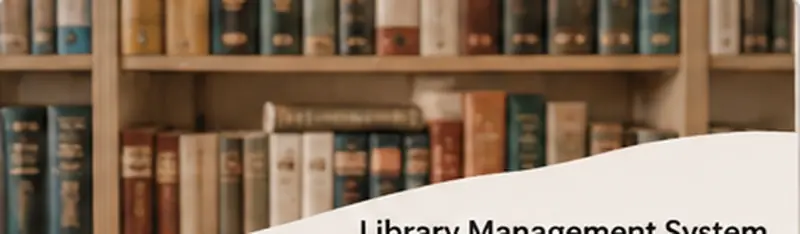
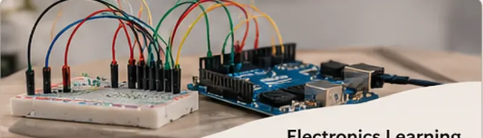

MORROW
تصميم واجهة متجر للأكواب السيراميكية، مع التركيز على عرض المنتجات وتناسق الهوية البصرية.
مشروع واجهاتمعرض الأعمال / 2026
مجموعة من التجارب التطبيقية والمشاريع الدراسية في الواجهات والبرمجة.

تصميم واجهة متجر للأكواب السيراميكية، مع التركيز على عرض المنتجات وتناسق الهوية البصرية.
مشروع واجهات
تصور تدريبي لمتجر عبايات؛ يركز على تصنيف القطع وإبراز تفاصيلها ضمن تجربة تصفح هادئة.
مشروع تدريبي — تصور تصميمي
تصور تدريبي لواجهة متجر عطور، مع إبراز صور المنتجات وتقديم هوية بصرية مناسبة لطبيعة العلامة.
مشروع تدريبي — تصور تصميمي
تطبيق دراسي لخوارزمية RSA باستخدام Java، مع اختبار تشفير رسالة وفك تشفيرها والتحقق من تطابق النتيجة.
مشروع دراسي
مشروع دراسي لتطبيق مفاهيم البرمجة كائنية التوجه، مع إضافة الكتب والمجلات وعرض عناصر المكتبة.
مشروع دراسي
محتوى تعليمي وملاحظات مبسطة لمراجعة مفاهيم الإلكترونيات وأساسيات أشباه الموصلات والدوائر.
محتوى تعليمي